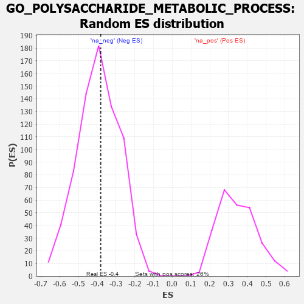

| | | Dataset | 7d |
| Phenotype | NoPhenotypeAvailable |
| Upregulated in class | na_neg |
| GeneSet | GO_POLYSACCHARIDE_METABOLIC_PROCESS |
| Enrichment Score (ES) | -0.3816901 |
| Normalized Enrichment Score (NES) | -0.9696072 |
| Nominal p-value | 0.55465585 |
| FDR q-value | 0.90332884 |
| FWER p-Value | 1.0 |
Table: GSEA Results Summary
 Fig 1: Enrichment plot: GO_POLYSACCHARIDE_METABOLIC_PROCESS
Fig 1: Enrichment plot: GO_POLYSACCHARIDE_METABOLIC_PROCESS
Profile of the Running ES Score & Positions of GeneSet Members on the Rank Ordered List
| PROBE | GENE SYMBOL | GENE_TITLE | RANK IN GENE LIST | RANK METRIC SCORE | RUNNING ES | CORE ENRICHMENT | | 1 | IRS1 | | | 98 | 1.659 | 0.0977 | No |
| 2 | PYGB | | | 183 | 1.114 | 0.1610 | No |
| 3 | GSK3A | | | 351 | 0.745 | 0.1894 | No |
| 4 | PYGL | | | 882 | 0.510 | 0.1565 | No |
| 5 | AKT1 | | | 1040 | 0.476 | 0.1683 | No |
| 6 | G6PC | | | 1121 | 0.459 | 0.1888 | No |
| 7 | GNMT | | | 2261 | 0.266 | 0.0632 | No |
| 8 | HAS1 | | | 2722 | 0.195 | 0.0183 | No |
| 9 | EXT1 | | | 3954 | 0.001 | -0.1364 | No |
| 10 | MTOR | | | 4114 | -0.025 | -0.1548 | No |
| 11 | PHKG1 | | | 4341 | -0.067 | -0.1788 | No |
| 12 | PGM1 | | | 5593 | -0.342 | -0.3134 | No |
| 13 | PGM2 | | | 6137 | -0.515 | -0.3475 | Yes |
| 14 | INSR | | | 6204 | -0.538 | -0.3201 | Yes |
| 15 | GYG1 | | | 6210 | -0.539 | -0.2849 | Yes |
| 16 | DYRK2 | | | 6533 | -0.677 | -0.2805 | Yes |
| 17 | GSK3B | | | 6719 | -0.768 | -0.2528 | Yes |
| 18 | PYGM | | | 7117 | -1.006 | -0.2360 | Yes |
| 19 | CALM1 | | | 7567 | -1.499 | -0.1930 | Yes |
| 20 | PASK | | | 7946 | -3.674 | 0.0031 | Yes |
Table: GSEA details [plain text format]

Fig 2: GO_POLYSACCHARIDE_METABOLIC_PROCESS: Random ES distribution
Gene set null distribution of ES for GO_POLYSACCHARIDE_METABOLIC_PROCESS